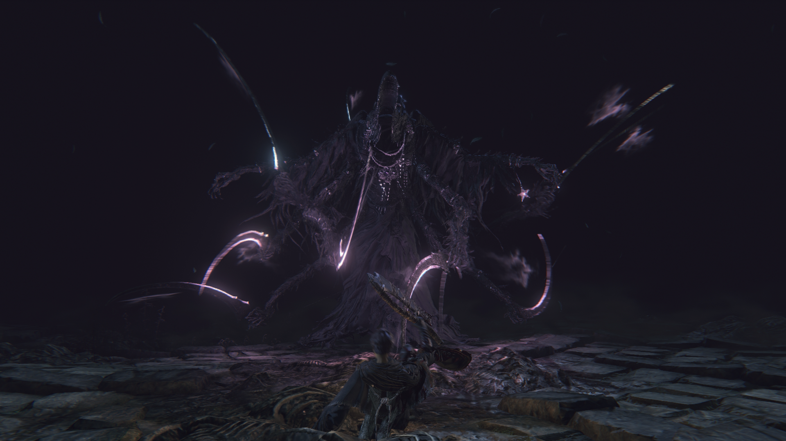
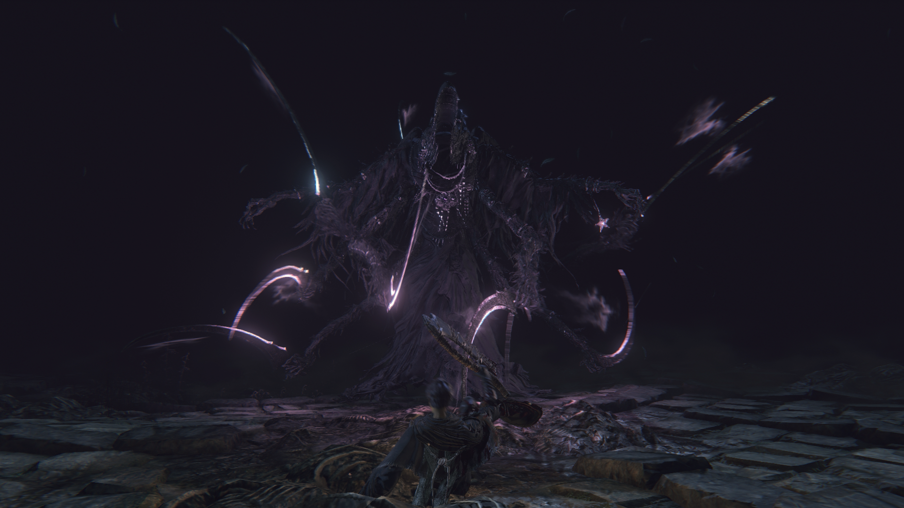

O Pesadelo de Mensis é o reflexo distorcido da insanidade de estudiosos que ousaram ir longe demais. Criado a partir de rituais da Escola de Mensis, este domínio onírico abriga os resquícios de uma mente coletiva em colapso. É um labirinto de corredores escuros, torres impossíveis e símbolos cósmicos. A própria realidade se desfaz, e a presença dos Eminentes está sempre presente. Aqui, a sanidade é sua maior vulnerabilidade.
O Pesadelo de Mensis é uma dimensão onírica criada por Micolash, o líder da Escola de Mensis — uma seita de estudiosos que abandonaram os limites da razão em busca de contato com os Eminentes. Obcecados por transcender a existência humana, eles utilizaram rituais profanos para tentar alcançar um plano superior de consciência. O resultado foi este pesadelo — uma realidade fragmentada, visível apenas por aqueles cuja sanidade já foi completamente corroída. Aqui, a lógica se desfaz, o tempo colapsa, e a própria existência se curva à influência cósmica.
O local é povoado por horrores insanos: estudiosos enlouquecidos, Marionetes de Ferro que atacam em grupo com brutalidade, gigantes com sinos que alertam inimigos próximos, e os temidos Cérebroides — criaturas humanoides deformadas por rituais cósmicos. Há ainda o aterrorizante Cérebro de Mensis, uma presença viva que provoca Frenesi apenas com seu olhar.

Micolash é o líder da Escola de Mensis, e neste pesadelo ele está aprisionado em um ciclo eterno de delírios. Obcecado pelos Grandes, ele vaga por corredores murmurando sobre Kos e olhos cósmicos. A batalha é incomum: uma perseguição labiríntica onde o caçador deve encurralá-lo e enfrentar seus feitiços arcanos. Micolash simboliza o colapso da razão diante do incompreensível.


 

A guardiã do recém-nascido Mergo, a Ama de Leite, é uma entidade silenciosa e espectral. Ela representa a manifestação final da loucura gerada pelo contato com os Grandes. A batalha acontece em meio ao choro distante de Mergo, com uma atmosfera solene e trágica. Sua derrota marca o fim do Pesadelo e a libertação da criança que nunca deveria ter nascido.